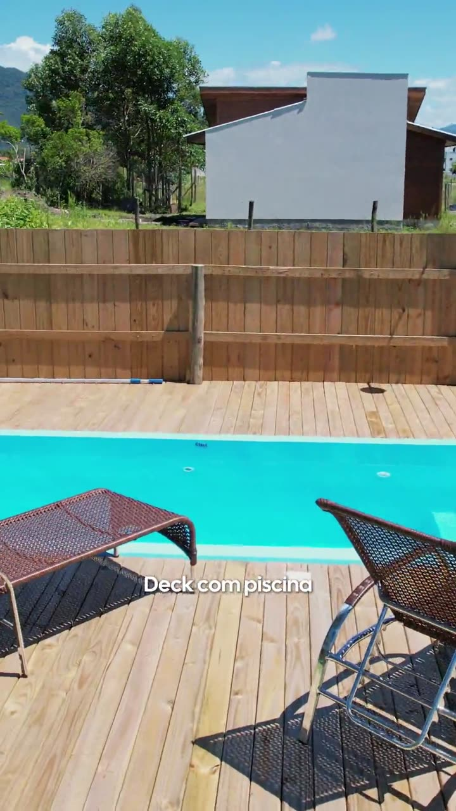
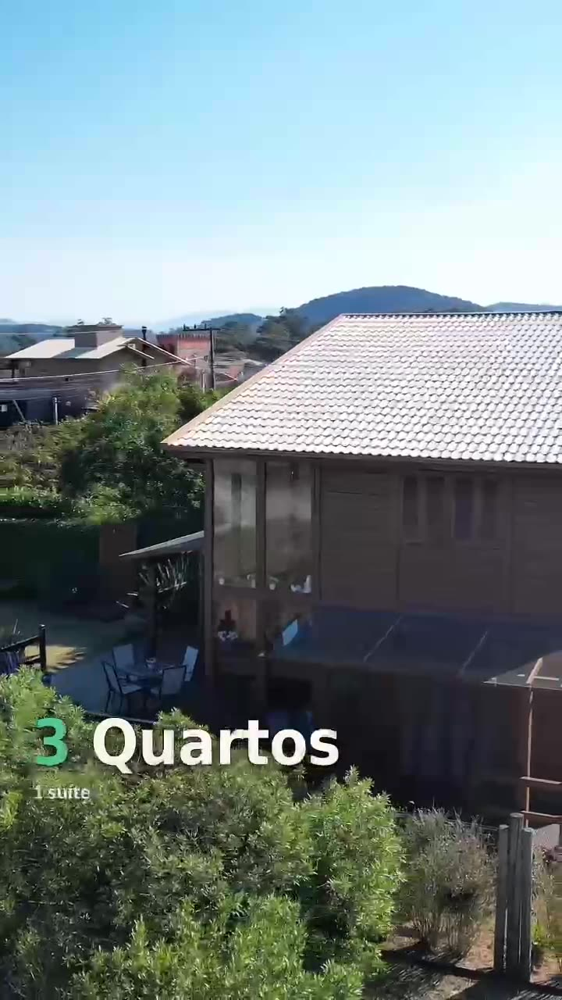
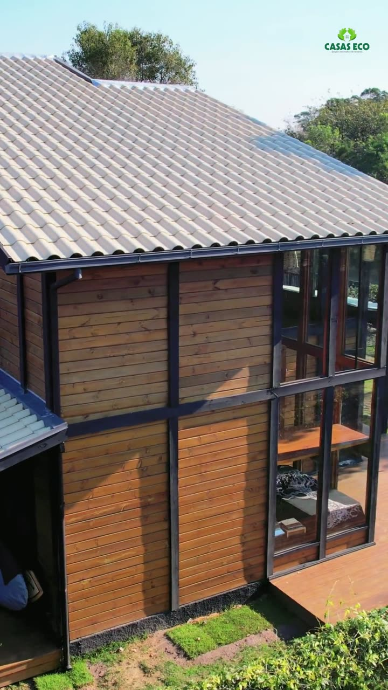
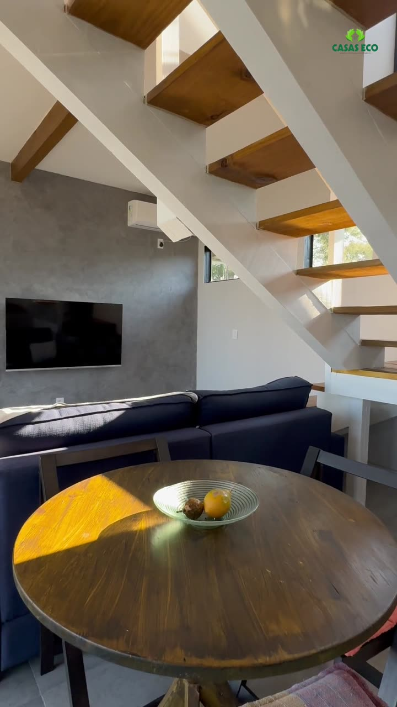

Chalé A-frame
Praia do Rosa · 60,33 m² · pronto em 30 dias
Feito 100% em madeira ecologicamente correta, com pergolado, churrasqueira e área de lazer.

Casas de madeira e alvenaria em Garopaba, prontas de 30 a 150 dias.
Construtora e loja de material no mesmo pátio. Mais de 150 obras em 20 anos.
SC-434, km 3, Campo Duna, Garopaba/SC
Chamar no WhatsApp

Praia do Rosa · 60,33 m² · pronto em 30 dias
Feito 100% em madeira ecologicamente correta, com pergolado, churrasqueira e área de lazer.
Praia do Rosa · 210 m² · completa em 150 dias
Decks e dois quartos separados. Os dois lofts ficaram prontos em 90 dias. À esquerda o antes e depois, à direita a obra pronta.

164 m² · 3 quartos · pronta em 120 dias
Três quartos, sendo uma suíte, e mais 50 m² de área externa.

76 m² de área útil · concluído em 90 dias
Mais 36 m² de deck e varanda em volta da casa.

150 m² · 2 pisos · parede dupla com drywall
Dois pavimentos abertos para a lagoa, com o interior acabado em drywall.
A equipe filmou a cobertura de uma casa, do madeiramento às telhas, e a pousada da Praia do Rosa durante a obra. Toque numa etapa para abrir e assistir.
A equipe da Casas Eco mostra a estrutura da cobertura montada em pinus tratado.
Na obra, a explicação de como o madeiramento recebe o telhado.
As telhas entram por último e fecham a cobertura.
A pousada com vista pra lagoa durante a construção, na Praia do Rosa.

Madeira ecologicamente correta, tratada em autoclave. Escolha a parede e veja o corte.
Mais resistência, segurança e durabilidade para o seu lar, com o material elétrico, hidráulico e as ferragens saindo da nossa própria loja.
Projetos que combinam os dois sistemas na mesma casa: a alvenaria onde ela rende mais e a madeira onde ela faz a casa.
A Casas Eco é construtora e material de construção. Quem constrói escolhe o material, e o material sai do nosso próprio pátio.


Casas, chalés e pousadas na Praia do Rosa, na Encantada, em Imbituba e em toda a região de Garopaba.
Estamos muito satisfeitos com a qualidade do produto, a mão de obra e todo o processo da construção.
Realizamos a construção da nossa casa na Encantada com a Casas Eco, desde a fundação até os retoques mais finos. Sr Guilherme nos prestou um excelente atendimento, sem falar na qualidade técnica que ele possui.
Recomendo! Excelentes profissionais! Cumpriram o acordado sempre se dispondo a resolver qualquer problema ou alteração proposta por mim na obra. O tratamento cortez e proativo dispensado pelo Sr. Guilherme é diferenciado.
Garopaba, Santa Catarina
Seg a sex, 8h às 18h Sáb, 8h às 12h
(48) 99675-4334 @casasecomadeiras Chamar no WhatsApp